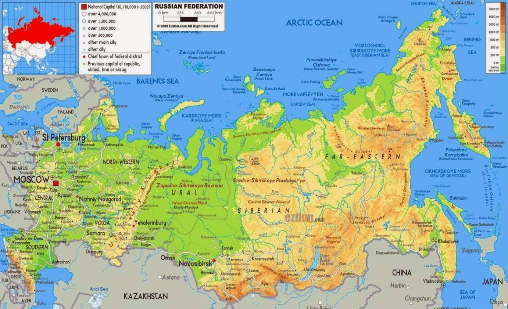
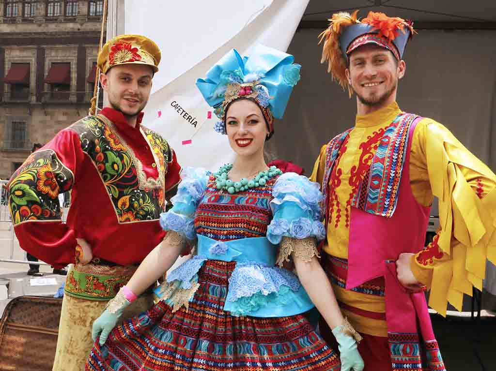

 La Federación Rusa se extiende a través de la mayor parte del norte del supercontinente Eurasia por lo que existen una gran variedad de paisajes y climas. La mayor parte del paisaje consiste en llanuras enormes, tanto en la parte europea como en la parte asiática que son ampliamente conocidas como Siberia. Estas llanuras son predominantemente estepa al sur y arbolado denso al norte, con la tundra a lo largo de la costa del norte. Se encuentran cadenas montañosas a lo largo de las fronteras del sur, como el Cáucaso (conteniendo el monte Elbrús, el punto más alto de Rusia con 5642 m) y el Altái, y en la parte este, como la Cordillera Verjoyansk o los volcanes sobre Kamchatka. Notables son los montes Urales en la parte central que son la división principal entre Europa y Asia. Rusia tiene una extensa línea de costa de 37 653 kilómetros que se extiende a lo largo de los océanos Ártico y Pacífico, así como bordeando mares interiores como los mares Báltico, Negro y Caspio. Los mares más pequeños son parte de los océanos; el mar de Barents, mar Blanco, mar de Kara, mar de Láptev y mar de Siberia Oriental son parte del Ártico, mientras que el mar de Bering, el mar de Ojotsk y el mar de Japón pertenecen al Pacífico. Las principales islas de Rusia se encuentran en los archipiélago de Nueva Zembla, Tierra de Francisco José, islas de Nueva Siberia e islas Kuriles, además de la isla de Wrangel y la isla de Sajalín. Muchos grandes ríos fluyen a través de las llanuras desembocando en las costas rusas. En Europa estos son el Volga, Don, Kama, Oká y el Dviná del Norte, mientras otros ríos nacen en Rusia, pero desembocan en otros países, como el Dniéper y el Dviná Occidental. En Asia se encuentran los ríos Ob, Irtysh, Yeniséi, Angará, Lena y Amur. Los lagos principales incluyen el lago Baikal, lago Ládoga y lago Onega.
 Rusia es un enorme país multinacional donde caprichosamente se han abrazado Oriente y Occidente originando el colorido irrepetible de la cultura rusa. Tradicionalmente se considera que Rusia es un país de religión ortodoxa; sin embargo, aquí usted puede encontrar a representantes de todas las confesiones, siendo las comunidades más numerosas las de los ortodoxos, católicos y musulmanes, así como también hay un gran número de ateístas. Además, a pesar de pertenecer oficialmente al cristianismo, aún hoy los ortodoxos observan muchas tradiciones paganas como son: la Maslenitsa con sus bliny o bañarse por la noche en la víspera de Iván Kupala; muchos rituales relacionados con el nacimiento y la muerte, con la celebración de las bodas y con otros importantes acontecimientos en la vida de las personas, sin olvidar en la creencia, casi general, en los duendes de familia, en la felicidad que las herraduras traen al hogar y los gatos tricolores y demás supersticiones. En una palabra, la libertad de culto y la tolerancia religiosa se han desarrollado en Rusia como quizás en ningún otro lugar del mundo. De aquí el rico y, sin duda, variado folclore popular que reúne las tradiciones de las numerosas culturas culturas que se han fundido en fuente única de inspiración para la creación popular. Es mejor apreciar con sus propios ojos (y oídos) la belleza y la riqueza de las canciones populares y bilinas (canciones épicas rusas), de las historias, leyendas y poesías épicas, de los refranes y dichos, de las artesanías populares; Intentar transmitir esto por otros medios es una tarea ingrata. Podrá usted comprobar la veracidad de estas palabras si tiene la suerte de que le inviten a casa, sobre todo si es con motivo de alguna celebración, cuando las mesas, como se suele decir, están repletas de comida y se vierten ríos de bebida a propósito del evento, y tras el ágape, se cantan canciones.